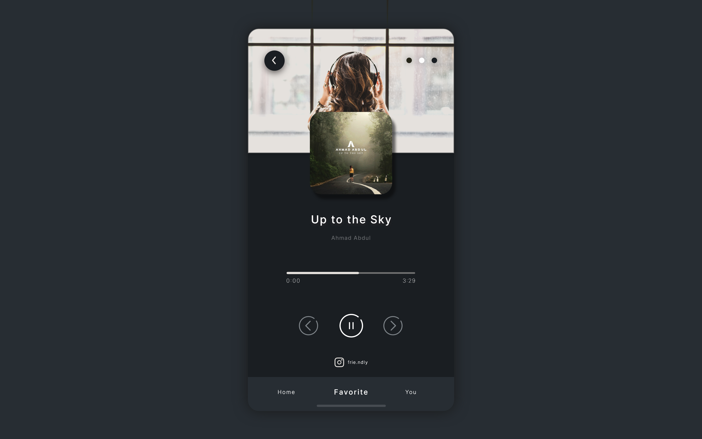

Perkenalkan nama saya Friendly Hulu, berasal dari Nias, Sumatera Utara. Saya tertarik dengan bidang UI/UX, Web Development, dan Fotografi
Dalam merancang dan mengembangkan sebuah website, saya menggunakan beberapa tools seperti Figma dan Adobe XD, disertai dengan penggunaan HTML, CSS , JAVASCRIPT , dan PHP
Selain berkaitan dengan website, saya juga memiliki ketertarikan dengan pengembangan aplikasi Android , khususnya dengan menggunakan java dan Firebase
Terinspirasi dari tampilan spotify, akhirnya mulai melakukan eksplorasi dengan mengusung tampilan yang lebih minimalis, mulai dari pemilihan warna, background, serta icon

Merupakan project mata kuliah Android dengan menggunakan tools seperti Android studio dengan penggunaan Java dan Firebase.